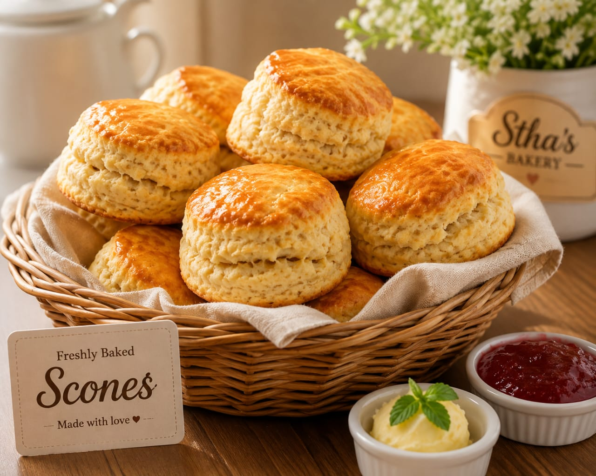
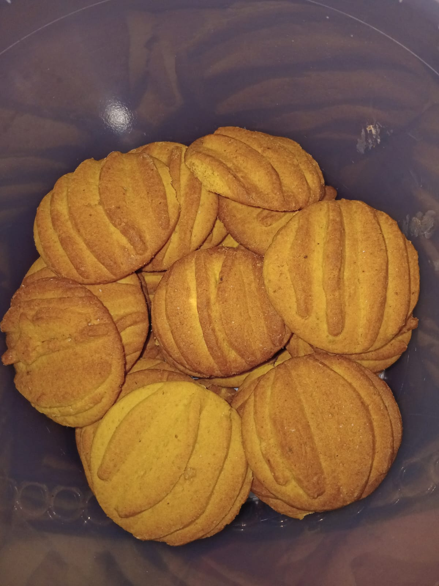

Explore Our Bakery
Browse our main offerings or go straight to an enquiry.

Fresh Scones
Soft, golden scones perfect for breakfast, tea and special occasions. Baked fresh to order.
See Products
Homemade Biscuits
Lemon, ginger, vanilla and more flavours available. Ideal for sharing and events.
See Products
Event Packages
Custom bakery packages for ceremonies, unveilings, funerals and gatherings.
Our Services